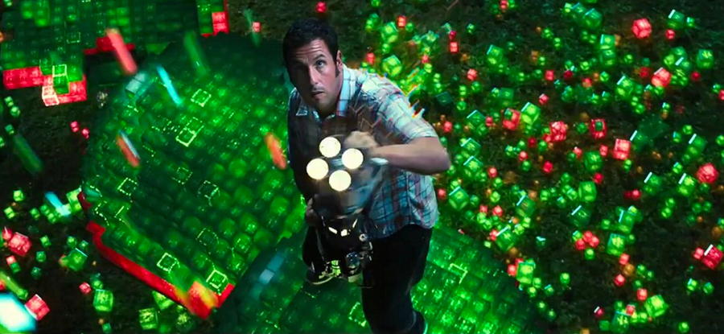
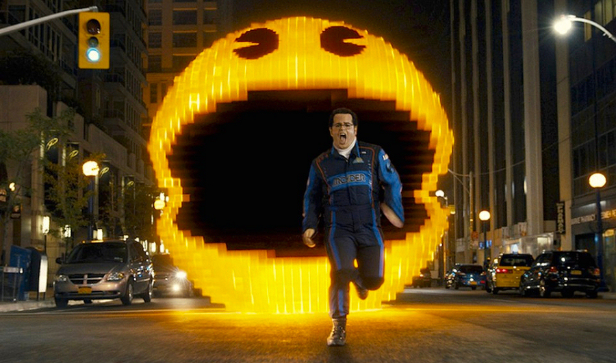

Space Invaders was the first proper video game (not counting Pong) I ever played. The amusement arcade where I encountered this, by nowadays standards very primitive, game for the first time was only a temporary – carnival trailer-based one, and I had only a few days to hone my skills on the game, before the attraction moved to another town, but by that time I was already completely hooked, and knew precisely what I wanted: to have my very own game console, so that I can play games at home, at my leisure, anytime, as long as I want, and most importantly, without the need to constantly feed the little bugger with coins. In the following years I bought my first gaming computer – ZX Spectrum, then Amiga, and finally moved on to PC gaming.
The first arcade video games had very low resolution, (hence the ‘Pixels’ in the title of the film), only basic graphics and provided mediocre entertainment with a little replay value. Unfortunately, the latter can also be said about the titular science fiction comedy film produced by Columbia Pictures, which is inspired by these games.
The story of the Pixels starts in 1982, when Sam Brenner (Adam Sandler) and Will Cooper (Kevin James) are thirteen-year-old friends that love playing video games at the local arcade. Brenner, who is the better gamer of the two, enters an arcade game world championship, where he finishes second to his nemesis, pompous Eddie ‘Fireblaster’ Plant (Peter Dinklage) (whose character was apparently modelled on real-life Pac-Man and Donkey Kong world champion Billy Mitchell). The two later meet and befriend another video-games-obsessed youth Ludlow Lamonsoff (Josh Gad), a much younger, socially-inept, conspiracy-theories-obsessed kid. As promised by the organisers of the event, the footage from the championship is included in a time capsule that NASA launches into space aboard one of their rockets.
Fast-forward to the present day, Cooper is now the president of the United States, while Brenner is working for ‘NERD’ – a company that sets up audio-video equipment for the less technically-minded. Brenner goes to the house of Violet van Patten (Michelle Monaghan) to install a gaming console and television set for her young son, who has received these as a gift to distract him from his parents’ impending divorce. Unknown to Brenner, who immediately falls for Violet, van Patten is a special weapons expert for the military in the rank of Lieutenant Colonel.
In the meanwhile, aliens have found the aforementioned time capsule from the 80s, but, having misunderstood the included footage from the video games tournament, assumed this being a declaration of war. Now, having created giant versions of assorted characters from several well-known retro video games, including Asteroids, Space Invaders, Pac-Man, Donkey Kong, Centipede, Arkanoid and Tetris, aliens challenge humans to a world-spanning video game contest, and threaten to claim planet Earth as the prize, should they win three rounds.
The first two attacks are aimed at the U.S. military base in Guam, where the aliens use oversized characters from video game Galaga, and against Taj Mahal in India, which is destroyed by gigantic Arkanoid paddles. This being a comedy, the victims of the attacks don’t get killed, but are – well – pixelated! With the third attack looming, the president summons Brenner and Ludlow to help with the defence. During the next offensive in Hyde Park, London, the aliens use for the attack giant characters from the video game Centipede. After the military fails to deflect the attack, Brenner and Ludlow step in, take over, and win the ‘game’, shooting down the centipedes using the light-beam guns developed by Lieutenant Colonel Violet van Patten.
To help them to face the next attack, taking place in the streets of New York City and using enormous Pac-Man characters, Brenner and Ludlow enlist the help of Plant (released from prison, where he is doing time for fraud, with the promise of a pardon, if he helps to avert the alien invasion). For this challenge, the trio is presented with four Mini Coopers in place of the ghosts that chase Pac-Man in the game, with the fourth car driven by the game's creator Toru Iwatani (Denis Akiyama). The ‘Team Earth’ wins again and, in the aftermath of the game, hold a ball to celebrate the victory.
However, their celebrations are cut short when the aliens send a message saying that someone cheated during the last game, and the contest for the planet has been therefore forfeited. It turns out that Eddie ‘the Fireblaster’ Plant is a life-long fraud, cheating not only in the last game, but also during the 1980’s arcade games tournament (in both cases using cheat codes etched into his sunglasses) to become the world champion. The aliens announce that they are no longer bound by the protocol and send in all the arcade game characters for the final decisive attack on Washington, D.C., with the aim to take over the Earth.

In the last desperate attempt to save the Earth from the alien invaders, Brenner, Cooper and Violet van Patten board the alien mothership. Inside the spacecraft, the aliens have constructed a huge three-dimensional obstacle course based on a Donkey Kong level. Brenner now faces his biggest challenge: to not only beat the aliens and save humankind, but also get better of Eddie Plant and reclaim his well-deserved title of the best arcade video game player in the world…
TRIVIA: While creator of the arcade game Pac-Man, Toru Iwatani, is portrayed in the film by Denis Akiyama, the real Iwatani cameos as an Electric Dreams Factory Arcade repairman.